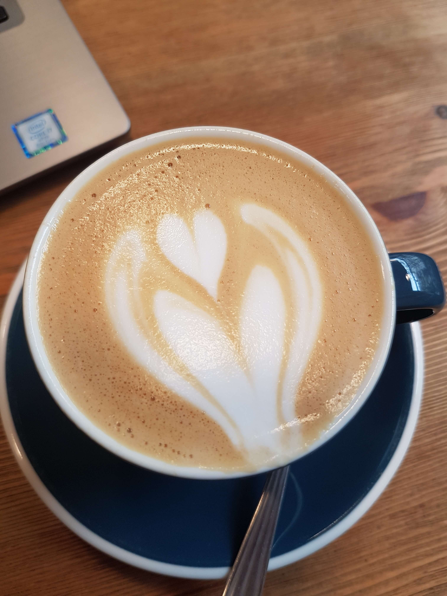

My favorite coffee shops in Barcelona
I'm a big coffee lover. During my 3 years living in Barcelona I've visited many of the speciality coffee places and made a list with my personal favorites. Enjoy!
- Hidden Cafe
- People's Coffee
- Roast Club Cafe
- Little Fern
- Robot House Cafe